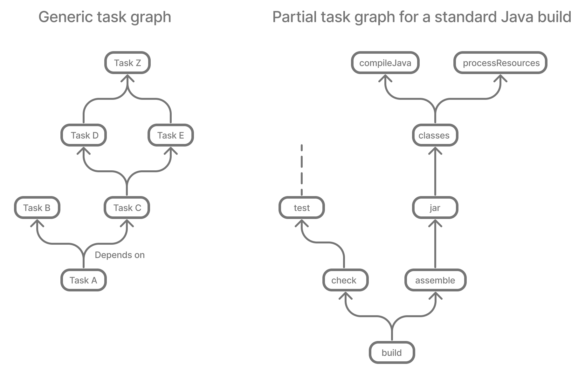
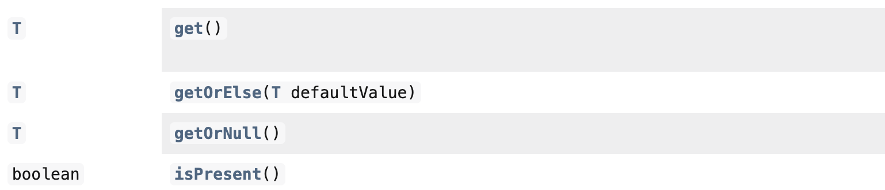

FAILURE: Build failed with an exception.
* What went wrong:
Execution failed for task ':libs:proto:extractIncludeTestProto'.
> Could not resolve all files for configuration ':libs:proto:testCompileProtoPath'.
> Could not resolve io.kotest:kotest-runner-junit5-jvm:4.1.0.293-SNAPSHOT.
Required by:
project :libs:proto
> The consumer was configured to find a component, preferably only the resources files. However we cannot choose between the following variants of io.kotest:kotest-runner-junit5-jvm:4.1.0.293-SNAPSHOT:20200519.105809-1:
- jvm-api
- jvm-runtime
- metadata-api
All of them match the consumer attributes:
- Variant 'jvm-api' capability io.kotest:kotest-runner-junit5-jvm:4.1.0.293-SNAPSHOT declares a component, packaged as a jar:
- Unmatched attributes:
- Provides integration status but the consumer didn't ask for it
- Provides an API but the consumer didn't ask for it
- Provides attribute 'org.jetbrains.kotlin.platform.type' with value 'jvm' but the consumer didn't ask for it
- Variant 'jvm-runtime' capability io.kotest:kotest-runner-junit5-jvm:4.1.0.293-SNAPSHOT declares a component, packaged as a jar:
- Unmatched attributes:
- Provides integration status but the consumer didn't ask for it
- Provides a runtime but the consumer didn't ask for it
- Provides attribute 'org.jetbrains.kotlin.platform.type' with value 'jvm' but the consumer didn't ask for it
- Variant 'metadata-api' capability io.kotest:kotest-runner-junit5-jvm:4.1.0.293-SNAPSHOT:
- Unmatched attributes:
- Doesn't say anything about its elements (required them preferably only the resources files)
- Provides integration status but the consumer didn't ask for it
- Provides a usage of 'kotlin-api' but the consumer didn't ask for it
- Provides attribute 'org.jetbrains.kotlin.platform.type' with value 'common' but the consumer didn't ask for itThe road to Gradle 9
Alex Semin
Louis Jacomet
Devoxx Belgium 2024
What are we talking about today?
📋
Build tools?
Who uses Gradle?
Who uses Maven?
Who uses both?
Who uses neither?
Who is happy to use a build tool?
Build logic
How often do you touch it?
Almost every day?
Almost every week?
Just once a month?
Agenda
Core evolutions
Build comprehensibility
Errors, warnings
Provider API and laziness
Build scalability
Guiding principles
Configuration cache
A peek into the future
Who are we?
🧑💻 🧑💻
Since 2008, our mission is to improve developer productivity.
Open-source build tool under Apache license
Official build tool for Android
Default with Spring Initializr
Over 45 million monthly downloads
Develocity, commercial solution, is the first integrated platform for Developer Productivity Engineering (DPE)

Developer Productivity Engineering
Developer Productivity Engineering (DPE) is a software development practice used by leading software development organizations to maximize developer productivity and happiness.
|
Build Scan™

Core evolutions
Gradle release timeline
2023 H1: 8.0 — 8.2
2023 H2: 8.3 — 8.5
2024 H1: 8.6 — 8.9
2024 H2: 8.10 — 8.12*
2025 H1: 8.13* — 9.0*
*current plans
What comes with 9.0 evolution?
Raising the minimum Java version
Require Java 17 and above for running Gradle
Require Java 8 and above for compiling, tests and executing user code
For workers in general
Kotlin DSL
Adopt Kotlin 2.0 language level
Enables leveraging Kotlin 2.0 features in build logic (plugins and scripts)
And what about K2 compiler?
Groovy DSL
Adopt Groovy 4.x
Language changes might impact build scripts
General update of dependencies
Internal Gradle dependencies updates
Plugins and tools defaults
Code quality: Checkstyle, PMD, …
Zinc for Scala compilation
Bug fixes
Many …
Smooth upgrade path
Upgrade to the latest Gradle 8.x
Fix deprecations
Use Upgrade Guide for more details
Opt-in into features becoming a default
Configuration cache is a major one
Finally, upgrade to Gradle 9.0
Gradle 9 themes
Build comprehensibility
Build scalability
Build comprehensibility
💡
Build complexity
Who has a complex build setup?
Gradle vision
Gradle Build Tool is an open-source build system that automates the process of building software of any type, size, or complexity in a fast and reliable manner
Gradle vision: comprehensibility
Gradle Build Tool is an open-source build system that automates the process of building software of any type, size, or complexity in a fast and reliable manner
Errors, warnings
Errors, warnings Help messages
Builds do fail, and that’s okay
What matters is how easy it is to
diagnose the problem
fix the problem
Assertion error handling

Assertion error handling: improved

Variant-aware dependency resolution errors
Specific errors for common issues
JVM version mismatch for a dependency (since Gradle 8.8)
FAILURE: Build failed with an exception.
* What went wrong:
A problem occurred configuring root project 'example'.
> Could not determine the dependencies of task ':consumer:compileJava'.
> Could not resolve all task dependencies for configuration ':consumer:compileClasspath'.
> Could not resolve project :producer.
Required by:
project :consumer
> project :producer requires at least a Java 18 JVM. This build uses a Java 17 JVM.
* Try:
> Run this build using a Java 18 JVM (or newer).
> Change the dependency on 'project :producer' to an earlier version that supports JVM runtime version 17.Specific errors for common issues
Gradle version mismatch for a plugin (since Gradle 8.7)
FAILURE: Build failed with an exception.
* What went wrong:
A problem occurred configuring root project 'example'.
> Could not resolve all files for configuration ':classpath'.
> Could not resolve com.example:plugin:1.0.
Required by:
project : > com.example.greeting:com.example.greeting.gradle.plugin:1.0
> Plugin com.example:plugin:1.0 requires at least Gradle 8.0. This build uses Gradle 7.6.
* Try:
> Upgrade to at least Gradle 8.0. See the instructions at https://docs.gradle.org/8.7/userguide/upgrading_version_8.html#sub:updating-gradle.
> Downgrade plugin com.example:plugin:1.0 to an older version compatible with Gradle 7.6.Specific errors for common issues
Variant ambiguity due to a single unspecified attribute (since Gradle 8.9)
FAILURE: Build failed with an exception.
* What went wrong:
A problem occurred configuring root project 'example'.
> Could not resolve all files for configuration ':consumer'.
> Could not resolve com.squareup.okhttp3:okhttp:4.4.0.
Required by:
project :
> The consumer was configured to find attribute 'org.gradle.category' with value 'documentation'. There are several available matching variants of com.squareup.okhttp3:okhttp:4.4.0
The only attribute distinguishing these variants is 'org.gradle.docstype'. Add this attribute to the consumer's configuration to resolve the ambiguity:
- Value: 'javadoc' selects variant: 'javadocElements'
- Value: 'sources' selects variant: 'sourcesElements'
- Value: 'other' selects variant: 'additionalDocs'Specific errors for common issues
Compilation errors at the end of the build (upcoming in Gradle 8.11)
* What went wrong:
Execution failed for task ':project1:compileJava'.
> Compilation failed; see the compiler output below.
Java compilation error (compilation:java:java-compilation-error)
sample-project/src/main/java/Problem.java:6: error: incompatible types: int cannot be converted to String
String a = 1;
^Better build output
Better structured
Actionable
Documented
Concrete example - before
FAILURE: Build failed with an exception.
* What went wrong:
Execution failed for task ':dependencies'.
> Could not resolve all dependencies for configuration ':lockedConf'.
> Invalid lock state for lock file specified in '<project>/lock.file'. Line: <<<<<<< HEAD For more information on formatting, please refer to https://docs.gradle.org/8.5/userguide/dependency_locking.html#lock_state_location_and_format in the Gradle documentation.Concrete example - after
FAILURE: Build failed with an exception.
* What went wrong:
Execution failed for task ':dependencies'.
> Could not resolve all dependencies for configuration ':lockedConf'.
> Invalid lock state for lock file specified in '<project>/lock.file'. Line: '<<<<<<< HEAD'
* Try:
> Verify the lockfile content. For more information on lock file format, please refer to https://docs.gradle.org/8.6/userguide/dependency_locking.html#lock_state_location_and_format in the Gradle documentation.Provider API and laziness
What are the challenges?
Challenge: Evaluation Ordering
Build scripts are code
Code comes with evaluation ordering
How can you express that something is to be configured after a later operation?
afterEvaluatedoes not scaleHow "after" do you need to be?
Example
val customTask = tasks.register<ComputeArtifactId>("customTask")
subprojects {
publishing {
publications {
create<MavenPublication>("mavenJava") {
from(components["java"])
afterEvaluate {
artifactId = customTask.flatMap { it.artifactId }.get()
}
}
}
}
}Challenge: Execution Ordering
Tasks produce files
Other tasks consume those files
How do you make sure that consumer
dependsOnthe producing task?
The Gradle task graph

Solution

Provider API
Deferred value resolution
Automatic task dependency management
Improved build performance
Provider API: Evaluation Ordering
Wire and derive values
Without caring about when it is set
Evaluation is done on demand
Task does not run → No inputs are computed
Provider API: Execution Ordering
Task output properties
→ used as input to another task
→ track task dependencies automatically.
Provider API - Lazy

Provider API - Eager

Kotlin DSL assignment
interface Extension {
val description: Property<String>
}
// register "extension" with type Extension
extension {
// Using the set() method call
description.set("Hello Property")
// Using lazy property assignment
description = "Hello Property"
}Demo
val producer = tasks.register<Producer>("producer")
val consumer = tasks.register<Consumer>("consumer")
consumer {
// Connect the producer task output to the consumer task input
// Don't need to add a task dependency to the consumer task.
// This is automatically added
inputFile = producer.flatMap { it.outputFile }
}
producer {
// Set values for the producer lazily
// Don't need to update the consumer.inputFile property.
// This is automatically updated as producer.outputFile changes
outputFile = layout.buildDirectory.file("file.txt")
}
// Change the build directory.
// Don't need to update producer.outputFile and consumer.inputFile.
// These are automatically updated as the build directory changes
layout.buildDirectory = layout.projectDirectory.dir("output")Adoption challenge
Existing Gradle API is large
Lots of "properties" to convert
Alternative (minor) → Deprecation (minor) → Removal (major)
Disruptive cycle
Long cycle
Bridging plain properties and Provider API is awkward
In short, does not scale
buildDir example
// Returns a java.io.File
file("$buildDir/myOutput.txt")to be replaced with
// Compatible with a number of Gradle lazy APIs that accept also java.io.File
val output: Provider<RegularFile> = layout.buildDirectory.file("myOutput.txt")
// If you really need the java.io.File for a non lazy API
output.get().asFile
// Or a path for a lazy String based API
output.map { it.asFile.path }Provider API migration
Do a large scale migration of Gradle APIs in Gradle 9.0
Supported by automatic runtime conversions for plugins
Requires polishing the Provider API itself
Does not resolve the adoption by community plugins
Agenda
Core evolutions
Build comprehensibility
Errors, warnings
Provider API and laziness
Build scalability
Guiding principles
Configuration cache
A peek into the future
Build scalability
🚀
Who has a long build?
1 hour and more?
30 minutes and more?
5 minutes and more?
less than a minute?
Gradle vision: scalability
Gradle Build Tool is an open-source build system that automates the process of building software of any type, size, or complexity in a fast and reliable manner
Guiding principles
Overhead should be proportional to the impact of the change
Prioritization based on use-cases
Inner developer loop
Code, Build and Test
Outer developer loop
Sync
Integrate
Stateful CI/CD
Ephemeral CI/CD
Gradle build anatomy
Bars not to scale
Primary strategies
Performance focus
Work avoidance
Minimize unnecessary work, enhancing efficiency
Parallelism
Maximize speed by leveraging concurrent processing
Execution work avoidance
Up-to-date tasks
Output caching
Tasks
And more
Local and remote
Incremental tasks
Execution work avoidance with Develocity
Replicated remote caching of outputs
Predictive test selection
Execution parallelism
Parallel test execution
Parallel task execution
Worker API
Execution parallelism with Develocity
Test Distribution
Configuration work avoidance
Gradle Configuration Cache
The Configuration Cache is
a feature that significantly improves the inner developer loop performance
by caching the result of the configuration phase
and reusing this for subsequent builds.
What is cached?
Task graph
Task inputs
All the rest is discarded
No
projectstate anymore
Example of invalid input
abstract class SomeTask : DefaultTask() {
@get:Input lateinit var sourceSet: SourceSet
@TaskAction
fun action() {
val classpathFiles = sourceSet.compileClasspath.files
// Do something with the files
}
}needs to become
abstract class SomeTask : DefaultTask() {
@get:InputFiles @get:Classpath
abstract val classpath: ConfigurableFileCollection
@TaskAction
fun action() {
val classpathFiles = classpath.files
// Do something with the files
}
}configured with
classpath.from(sourceSet.compileClasspath)Demo
Additional benefits
Better parallelism at execution
Intra project task parallelism
Reduced memory usage on CC hits
No configuration state is created
Can you use it for your build?
It depends on your build
You may have to refactor custom build-logic
Most popular plugins out there are already compatible
You can selectively declare incompatible tasks
tasks.some { notCompatibleWithConfigurationCache("because") }This is about applying best practices anyway
Configuration Cache Report
Configuration Cache Report
Ergonomic stacktraces attached to problems

Configuration Cache Report
Summary of tasks marked as incompatible
Space Usage Analysis
Useful if your cached state is too big
External tool gradle/gcc2speedscope
Helps identify "task state leaks"

What about CC on CI?
Not officially supported
Absolute paths
Need to have build logic and dependencies as well
What performance benefits?
It depends on your build
It’s not only about avoiding the configuration phase
All tasks will run in parallel, always
Configuration model memory can be freed
Small builds will mostly benefit from more parallelism
Large builds will also benefit from avoided configuration
What performance benefits?
For example: Square, on their large Android build
Early adopters - Blog Post - December 2022
decreased our local build times from 182 hours to 25 hours per week!
Saving 5,400 hours a year with Gradle’s Configuration Cache
Recovering an estimated $1.1 million in lost productivity annually
Recent performance improvements
Smaller cache entries / Faster load times (
8.10)Parallel load of cache entries (
8.11)Parallel store of cache entries (
8.11opt-in)More efficient storage (in-progress)
Performance gains in 8.10
Smaller cache entries / Faster load times
On the Gradle build:
Miss: -2.75%
Hit: -23.46%
Storage: -57.4%
On a large synthetic Android build (3400+ modules):
Miss: -7.67%
Hit: -28.09%
Storage: -72.6%
Configuration Cache status
Widely adopted by the ecosystem and community
Brings direct benefits to developer productivity
Keeps getting faster and easier to adopt
Unlocks more upcoming performance features
Peeking into the future
🔮
Gradle 9 objectives
🐘
Gradle 9 - 😠Core updates
Java 17 minimum for Gradle daemon, Java 8 for workers
Kotlin Language 2.0 support in our Kotlin DSL
Groovy 4
Tools and libraries updates
Many bug fixes and improvements
Gradle 9 - 💡 Comprehensibility
Provider API 1.0
Feature complete for supported use cases
Provider API Migration
Binary compatible migration for 3rd party plugins
Source-compatible migration for local build logic
Problems API
Gradle 9 - 🚀 Scalability
Configuration Cache recommended
Deprecation warning if not enabled in later 9.x
Accumulated performance improvements and memory optimizations
Gradle 9.0 timeline
Q1 2025 release (tentative)
Ongoing work
Isolated Projects
🎶
Limitations of Configuration Cache
What about the work of the build engineer?
What about dependency upgrades and other build focused engineering tasks?
Did you say cache miss?
On a miss, the configuration phase needs to run
But, with no shared mutable state between projects, it could
Run in parallel
following the projects hierarchy
Be cached incrementally
task sub-graphs cached per project
Isolated Projects constraints
No mutable cross-project access during configuration
Constraints violations
Access to mutable state of another project is forbidden
Examples:
allprojects { group = "…" }version = rootProject.versiondependsOn(project(":b").tasks.findByName("foo"))
Directions of development
Performance benefits
Compatible APIs and patterns
Ecosystem adoption
Isolated Projects Adoption
Ecosystem plugins
Java ☑️
Kotlin 🏗️
Android 🏗️
Other plugins
Core validation plugins ☑️
Other core plugins ⏳
Popular community plugins ⏳
Performance benefits
Parallel CC store ☑️
Parallel configuration for Sync ☑️
Parallel configuration for CLI ☑️
Incremental configuration for Sync 🏗️
Incremental configuration for CLI
Isolated Projects-friendly patterns
Convention plugins
Task-output sharing via dependency management
Isolated Projects-safe APIs
Safe project view —
IsolatedProjectrootProject.isolated.projectDirectory
New lifecycle callbacks —
GradleLifecyclegradle.lifecycle.beforeProject { group = "…" }
Project-free dependencies with capabilities —
requireFeature()implementation(project(":other"))
{ capabilities { requireFeature("foo") } }
Demo
Isolated Projects Status
Alpha experiment on top of the Configuration Cache
Focuses on speeding up the IDE experience first
Interesting for early adopters
Early adoption approach
Read Isolated Projects overview in the userguide
Start with the
helptask with
-Dorg.gradle.unsafe.isolated-projects=trueInspect the violations in the report
For Sync, add the line to the
gradle.properties
org.gradle.unsafe.isolated-projects=trueReport found problems to community plugins you use
Declarative Gradle
🐘
Challenges 🔥
Gradle’s build language characteristics:
Flexible, extensible, & adaptable to complex requirements 👍
Appreciated by advanced users 👍
Significant learning curve 👎
Projects often look very different from one another 👎
Mission statement
Gradle Build Tool is an open-source build system that automates the process of building software of any type, size, or complexity in a fast and reliable manner
What sets Gradle Build Tool apart is its elegant and extensible declarative build language that enables expressing any build in a clear and understandable way.
How do we do?
What sets Gradle Build Tool apart is its elegant and extensible declarative build language that enables expressing any build in a clear and understandable way.
Current Gradle is
Extensible ✅
Declarative 🤔
Clear and understandable 😕
Key principles
Improved ease of use for regular software developers
Sustained flexibility for build engineers and advanced users
Excellent IDE integration and toolability for everyone
Disclaimers
We are experimenting
Running those experiments require nightly builds
Some IDE integrations are demonstrated outside an IDE
Prototypes are changing all the time and are not ready for real projects
Experiments
Software types
Declarative Configuration language with integrated tooling
Example
An Android application
(1)
androidApplication { (2)
jdkVersion = 17
compileSdk = 34
versionCode = 8
versionName = "0.1.2"
applicationId = "org.gradle.experimental.android.application" (3)
namespace = "org.gradle.experimental.android.application"
dependencies { (4)
implementation("com.google.guava:guava:32.1.3-jre") (5)
implementation(project(":android-util"))
}
buildTypes {
release {
dependencies {
implementation("com.squareup.okhttp3:okhttp:4.2.2")
}
minifyEnabled = true
}
}
}| 1 | No plugins block |
| 2 | Type of software this build describes |
| 3 | Configuring a simple property |
| 4 | Configuring a block |
| 5 | Type-safe custom dependencies block |
Two way tooling
Declarative Gradle - What’s next?
First EAP back in July 2024
see blog post
Second EAP in October 2024
will allow users to experiment with their own builds
Looking for feedback from developers and build engineers
Third EAP by the end of the year
Exact content to be determined
Thank you!
 |